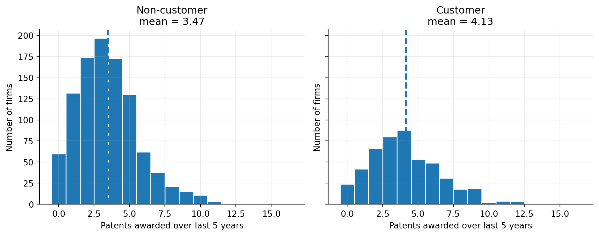
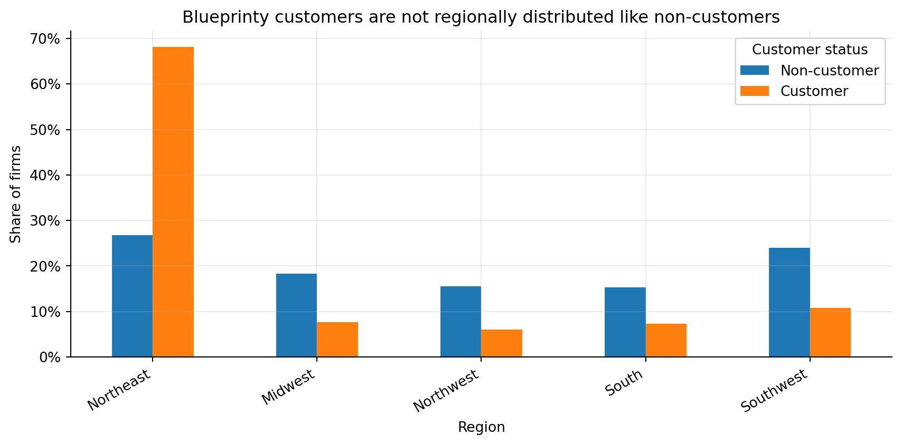
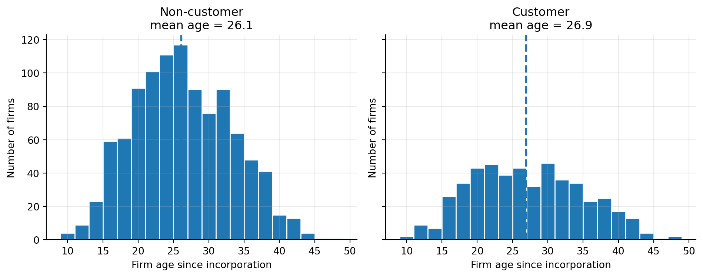
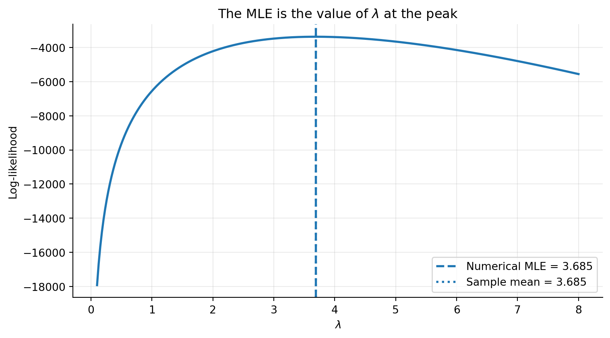
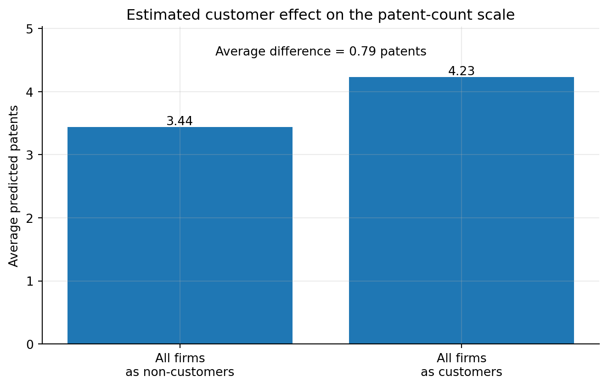

| customer_status | firms | mean_patents | median_patents | sd_patents | mean_age |
|---|---|---|---|---|---|
| Non-customer | 1,019 | 3.47 | 3.0 | 2.23 | 26.1 |
| Customer | 481 | 4.13 | 4.0 | 2.55 | 26.9 |
Poisson Regression and Maximum Likelihood Estimation
A Case Study of Blueprinty’s Software and Patent Awards
Introduction
Business context
Blueprinty sells blueprint-development software to engineering firms preparing patent applications. The product story the company wants to test is simple: do Blueprinty customers receive more patents than similar non-customers?
That question matters for two reasons:
| Business use | Why this analysis helps |
|---|---|
| Marketing claim | If customers receive more patents, Blueprinty can describe the product as connected to better patent outcomes. |
| Product improvement | If the relationship is weak or concentrated in certain firm types, Blueprinty can learn where the product may need improvement or where it works best. |
Goal of this post
The goal is to estimate the relationship between Blueprinty customer status and the number of patents awarded over the last five years. I use maximum likelihood estimation (MLE) to fit a Poisson regression model, then compare the by-hand MLE results with a standard GLM implementation.
The practical question is:
Holding firm age and region fixed, are Blueprinty customers predicted to receive more patents?
This is a controlled association, not a clean causal experiment. Still, it is more useful than a raw customer-versus-non-customer comparison.
Why this is hard
The main issue is selection: Blueprinty customers are not randomly assigned to use the product. That creates a few problems:
- Different firm types may choose Blueprinty. More sophisticated or better-funded firms may be more likely to buy the software.
- Patent counts depend on firm maturity. Older firms may have more established R&D and patent processes.
- Patent counts may differ by region. Some regions may have more patent-heavy industries or stronger legal/IP ecosystems.
- We only observe a snapshot. We do not see each firm before and after adopting Blueprinty.
- Important variables are missing. The dataset does not include R&D spending, legal budget, engineering headcount, patent strategy, or product pipeline quality.
So the model can adjust for what we observe, but it cannot remove every possible source of bias.
Available data
The dataset contains 1,500 mature engineering firms. For each firm, we observe:
| Variable | What it captures | Why it matters |
|---|---|---|
patents |
Number of patents awarded over the last five years | The outcome we want to explain |
iscustomer |
Whether the firm is a Blueprinty customer | The main variable of interest |
age |
Years since incorporation | Older firms may patent differently than younger firms |
region |
Firm location category | Regional industry mix may affect patenting |
The data is useful, but not perfect. It tells us who is a customer and how many patents they received, but not why they became customers, how intensively they used the software, or whether their patenting trajectory changed after adoption.
MLE roadmap
I follow the same MLE recipe from class:
- Specify a probability model for patent counts.
- Write the likelihood and log-likelihood.
- Maximize the log-likelihood numerically.
- Check the result against a built-in GLM.
- Translate the fitted model into a business interpretation.
Exploring the Data
The first table gives the raw comparison.
Quick read:
- Customers average 4.13 patents over five years.
- Non-customers average 3.47 patents over five years.
- The raw gap is about 0.66 patents.
- This is suggestive, but it is not enough to claim the software caused the difference. Customers and non-customers may differ in other ways.

What the histograms show:
- The two groups overlap a lot. Many customers and non-customers have similar patent counts.
- The customer distribution is shifted slightly to the right.
- Customers appear more often in the 4+ patent range.
- Non-customers are more concentrated around 2-3 patents.
Takeaway: the raw data is consistent with the idea that customers patent more, but the plot still does not adjust for age, region, or other firm differences.
| Region | Non-customer share | Customer share |
|---|---|---|
| Northeast | 26.8% | 68.2% |
| Midwest | 18.4% | 7.7% |
| Northwest | 15.5% | 6.0% |
| South | 15.3% | 7.3% |
| Southwest | 24.0% | 10.8% |

What the regional split shows:
- The regional imbalance is large.
- About 68% of Blueprinty customers are in the Northeast.
- Only about 27% of non-customers are in the Northeast.
- Customers are less represented in every other region.
Takeaway: region is a real confounder. If the Northeast has higher patenting rates for reasons unrelated to Blueprinty, then the raw customer gap may partly reflect geography rather than the software.

What the age histograms show:
- The customer and non-customer age distributions are much more similar than the region distributions.
- Customers are still slightly older on average.
- Age can matter because older firms may have more developed R&D processes, patent-writing routines, and product portfolios.
- The relationship may not be perfectly straight-line: patenting could rise as firms mature, then flatten or decline.
For that reason, the regression controls for both age and age squared. This lets the model capture a curved relationship between firm age and patent counts.
Exploration summary
The exploratory analysis points to three useful ideas:
- Customers do have higher raw patent counts. The average gap is about 0.66 patents over five years.
- The groups are not balanced. Customers are heavily concentrated in the Northeast and are slightly older.
- A regression model is needed. The model should compare customers and non-customers while holding observed firm characteristics fixed.
A Simple Poisson Model via Maximum Likelihood
Before using a full regression model, I start with the simplest possible Poisson model: one common patent rate for every firm.
This model is useful for learning the MLE mechanics, but it is not a great final model for the business question.
Why it is useful:
- Patent counts are non-negative integers.
- The Poisson distribution is designed for count outcomes: \(0,1,2,\ldots\).
- The model has one rate parameter, \(\lambda\), which is easy to estimate and visualize.
Why it is limited:
- It assumes every firm has the same expected patent count.
- It ignores customer status, age, and region.
- It assumes the mean and variance of patent counts are the same, which may be too restrictive.
- It cannot answer the real question: whether customers patent more after adjusting for firm characteristics.
So this section is a stepping stone. It shows how MLE works before moving to Poisson regression.
For one firm, assume:
\[ Y_i \sim \text{Poisson}(\lambda) \]
with probability mass function:
\[ f(y_i \mid \lambda) = \frac{e^{-\lambda}\lambda^{y_i}}{y_i!}. \]
If the observations are iid, the joint likelihood is the product of the individual probabilities:
\[ L_n(\lambda) = \prod_{i=1}^n \frac{e^{-\lambda}\lambda^{y_i}}{y_i!}. \]
Collecting terms gives:
\[ L_n(\lambda) = \frac{e^{-n\lambda}\lambda^{\sum_{i=1}^n y_i}}{\prod_{i=1}^n y_i!}. \]
Taking logs turns the product into a sum:
\[ \ell_n(\lambda) = \log L_n(\lambda) = -n\lambda + \left(\sum_{i=1}^n y_i\right)\log(\lambda) - \sum_{i=1}^n \log(y_i!). \]
The last term does not depend on \(\lambda\), but I keep it in the code so that the log-likelihood is on the same scale as standard software.
Code
# The scalar Poisson log-likelihood for a common rate lambda.
Y = df["patents"].to_numpy()
def poisson_loglikelihood(lam, Y):
"""Log-likelihood for iid Y_i ~ Poisson(lambda)."""
if lam <= 0:
return -np.inf
return np.sum(Y * np.log(lam) - lam - gammaln(Y + 1))Code
lambda_grid = np.linspace(0.1, 8, 300)
ll_values = np.array([poisson_loglikelihood(lam, Y) for lam in lambda_grid])
lambda_mean = Y.mean()
lambda_opt = minimize_scalar(
lambda lam: -poisson_loglikelihood(lam, Y),
bounds=(0.001, Y.max() + 10),
method="bounded",
)
lambda_mle = lambda_opt.x
fig, ax = plt.subplots(figsize=(8, 4.5))
ax.plot(lambda_grid, ll_values, linewidth=2)
ax.axvline(lambda_mle, linestyle="--", linewidth=2, label=f"Numerical MLE = {lambda_mle:.3f}")
ax.axvline(lambda_mean, linestyle=":", linewidth=2, label=f"Sample mean = {lambda_mean:.3f}")
ax.set_xlabel(r"$\lambda$")
ax.set_ylabel("Log-likelihood")
ax.set_title(r"The MLE is the value of $\lambda$ at the peak")
ax.legend()
plt.tight_layout()
plt.show()
The log-likelihood curve peaks at the value of \(\lambda\) that makes the observed patent counts most likely under the simple Poisson model. Visually, the peak occurs around 3.68.
We can also solve this analytically. The first derivative is:
\[ \frac{\partial \ell_n(\lambda)}{\partial \lambda} = -n + \frac{\sum_{i=1}^n y_i}{\lambda}. \]
Setting it equal to zero gives:
\[ -n + \frac{\sum_{i=1}^n y_i}{\lambda}=0 \qquad \Rightarrow \qquad \hat{\lambda}_{MLE}=\frac{1}{n}\sum_{i=1}^n y_i = \bar{Y}. \]
This result makes intuitive sense because the mean of a Poisson distribution is \(\lambda\).
| Quantity | Estimate |
|---|---|
| Sample mean of patent counts | 3.684667 |
| Numerical MLE from scipy.optimize | 3.684667 |
The numerical optimizer and the sample mean agree up to numerical precision. This is exactly what the likelihood derivation predicted.
Poisson Regression
The simple model gives every firm the same expected patent count. That is too crude. A better model lets the expected count change with firm characteristics.
Why the exponential shows up
A Poisson rate must be positive. A linear regression-style score, \(X_i'\beta\), can be negative, zero, or positive. So we model the log of the expected count as a linear function:
\[ \log(\lambda_i) = X_i'\beta. \]
Exponentiating both sides gives:
\[ \lambda_i = \exp(X_i'\beta). \]
That is the purpose of exp(): it converts any linear score into a positive expected patent count. It also gives the coefficients a clean interpretation:
- A coefficient is a change in the log expected count.
exp(coefficient)is a multiplier on the expected count.- For example, if a coefficient is 0.20, then \(\exp(0.20) \approx 1.22\), meaning about 22% higher expected counts, holding other variables fixed.
This setup is called a generalized linear model (GLM): we choose a distribution for the outcome and a link function for the mean. Here the outcome distribution is Poisson, and the link function is the log link.
The model is:
\[ Y_i \sim \text{Poisson}(\lambda_i) \qquad \text{where} \qquad \lambda_i = \exp(X_i'\beta). \]
For the regression model, the log-likelihood is:
\[ \ell_n(\beta) = \sum_{i=1}^n \left[y_i X_i'\beta - \exp(X_i'\beta) - \log(y_i!)\right]. \]
The design matrix includes:
- an intercept,
- centered age,
- centered age squared,
- region indicators,
- the Blueprinty customer indicator.
I center age before squaring it to make the numerical optimization more stable. This does not change the basic meaning of the model; it still lets patent counts rise or fall nonlinearly with age. Northeast is the omitted region, so each region coefficient is interpreted relative to Northeast.
Code
# Center age before squaring to make numerical optimization more stable.
age_mean = df["age"].mean()
df["age_c"] = df["age"] - age_mean
df["age_c_sq"] = df["age_c"] ** 2
region_dummies = (
pd.get_dummies(df["region"], prefix="region", drop_first=False)
.drop(columns=["region_Northeast"])
)
X_df = pd.concat(
[
pd.Series(1.0, index=df.index, name="Intercept"),
df[["age_c", "age_c_sq"]],
region_dummies,
df[["iscustomer"]],
],
axis=1,
).astype(float)
X = X_df.to_numpy()
Y = df["patents"].to_numpy()
def poisson_regression_loglikelihood(beta, Y, X):
"""Log-likelihood for Poisson regression with lambda_i = exp(X_i beta)."""
eta = X @ beta
mu = np.exp(eta)
return np.sum(Y * eta - mu - gammaln(Y + 1))
def poisson_regression_nll(beta, Y, X):
"""Negative log-likelihood, because scipy minimizes by default."""
return -poisson_regression_loglikelihood(beta, Y, X)
def poisson_regression_gradient(beta, Y, X):
eta = X @ beta
mu = np.exp(eta)
return -(X.T @ (Y - mu))
def poisson_regression_hessian(beta, Y, X):
eta = X @ beta
mu = np.exp(eta)
# Hessian of the negative log-likelihood: X' diag(mu) X
return X.T @ (X * mu[:, None])Code
start = np.zeros(X.shape[1])
start[0] = np.log(Y.mean())
mle_result = minimize(
poisson_regression_nll,
x0=start,
args=(Y, X),
jac=poisson_regression_gradient,
hess=poisson_regression_hessian,
method="trust-exact",
options={"maxiter": 1000},
)
beta_hat = mle_result.x
H = poisson_regression_hessian(beta_hat, Y, X)
cov_hat = np.linalg.inv(H)
se_hat = np.sqrt(np.diag(cov_hat))
z_hat = beta_hat / se_hat
p_hat = 2 * (1 - norm.cdf(np.abs(z_hat)))
# Built-in check using statsmodels GLM.
glm_fit = sm.GLM(Y, X_df, family=sm.families.Poisson()).fit()| Term | MLE coef | MLE std. error | z | p-value | GLM coef | GLM std. error | exp(MLE coef) |
|---|---|---|---|---|---|---|---|
| Intercept | 1.3738 | 0.0289 | 47.50 | <0.001 | 1.3738 | 0.0289 | 3.951 |
| age_c | -0.0080 | 0.0021 | -3.84 | <0.001 | -0.0080 | 0.0021 | 0.992 |
| age_c_sq | -0.0030 | 0.0003 | -11.51 | <0.001 | -0.0030 | 0.0003 | 0.997 |
| region_Midwest | -0.0292 | 0.0436 | -0.67 | 0.504 | -0.0292 | 0.0436 | 0.971 |
| region_Northwest | -0.0467 | 0.0466 | -1.00 | 0.316 | -0.0467 | 0.0466 | 0.954 |
| region_South | 0.0274 | 0.0451 | 0.61 | 0.544 | 0.0274 | 0.0451 | 1.028 |
| region_Southwest | 0.0214 | 0.0385 | 0.56 | 0.578 | 0.0214 | 0.0385 | 1.022 |
| iscustomer | 0.2076 | 0.0309 | 6.72 | <0.001 | 0.2076 | 0.0309 | 1.231 |
How to read the regression table
- MLE vs. GLM: the by-hand MLE estimates match the built-in Poisson GLM estimates. This is the main check that the likelihood was coded correctly.
- Standard errors: the standard errors also match because they come from the curvature of the log-likelihood at the maximum.
exp(MLE coef): this column turns log-count coefficients into easier multipliers. A value above 1 means higher expected patent counts; a value below 1 means lower expected patent counts.
Main regression result
The customer coefficient is about 0.208. On the original count scale:
\[ \exp(0.208) \approx 1.23. \]
So, holding age and region fixed, Blueprinty customers are predicted to have about 1.23 times as many patents as otherwise similar non-customers. That is about a 23% higher expected patent count.
The age terms suggest a curved relationship between firm age and patenting. Expected patent counts rise until roughly the mid-20s in firm age, then taper off. That is plausible: very young firms may still be building patentable products, while very mature firms may have slower marginal patent growth.
The region coefficients are smaller than the customer coefficient. Since Northeast is the omitted region, each region term compares that region against Northeast while holding the other variables fixed.
| Quantity | Value |
|---|---|
| Optimizer converged | True |
| Custom MLE log-likelihood | -3258.072 |
| statsmodels GLM log-likelihood | -3258.072 |
| Maximum absolute coefficient difference | 7.56e-12 |
The Effect of Blueprinty’s Software
The coefficient table is useful, but the marketing question is easier to understand in expected patent counts. The customer coefficient tells us a percentage-type effect, not an “extra patents” effect.
To translate the result back into patent counts, I create two counterfactual versions of the data:
| Scenario | What changes | What stays fixed |
|---|---|---|
| \(X_0\) | Treat every firm as a non-customer | Age and region |
| \(X_1\) | Treat every firm as a customer | Age and region |
Then I predict patents under both scenarios and average the difference.
Code
X0_df = X_df.copy()
X1_df = X_df.copy()
X0_df["iscustomer"] = 0
X1_df["iscustomer"] = 1
pred_noncustomer = np.exp(X0_df.to_numpy() @ beta_hat)
pred_customer = np.exp(X1_df.to_numpy() @ beta_hat)
average_effect = np.mean(pred_customer - pred_noncustomer)
mean_noncustomer_cf = np.mean(pred_noncustomer)
mean_customer_cf = np.mean(pred_customer)
relative_effect = mean_customer_cf / mean_noncustomer_cf - 1| Quantity | Estimate |
|---|---|
| Predicted patents if all firms are non-customers | 3.436 |
| Predicted patents if all firms are customers | 4.229 |
| Average counterfactual difference | 0.793 |
| Relative difference | 23.1% |

Conclusion
What the model finds
The fitted model gives a clear directional result:
- If every firm is treated as a non-customer, the model predicts about 3.44 patents per firm.
- If every firm is treated as a customer, the model predicts about 4.23 patents per firm.
- The average difference is about 0.79 additional patents over five years.
- In relative terms, that is about a 23% increase in expected patent counts.
What this means for Blueprinty
The result supports Blueprinty’s marketing story in a controlled way: after adjusting for age and region, customers are still predicted to receive more patents than comparable non-customers. The raw difference was not just a simple artifact of customer firms being older or regionally different.
What this does not prove
This is still not definitive causal evidence. The dataset is observational, not randomized. The model controls for age and region, but it does not control for things like:
- R&D budget,
- legal resources,
- engineering headcount,
- product quality,
- patent strategy,
- pre-existing innovation intensity.
A stronger design would compare firms before and after adoption, use a credible quasi-experiment, or randomly encourage adoption across otherwise similar firms.
Final takeaway
Within the limits of the available data, the Poisson MLE analysis supports the claim that Blueprinty customers tend to receive more patents than comparable non-customers. The best interpretation is not “Blueprinty definitely causes more patents,” but rather:
Blueprinty customer status is strongly associated with higher expected patent counts, even after controlling for firm age and region.